One system, head to toe. From the journal cover to the funnel.
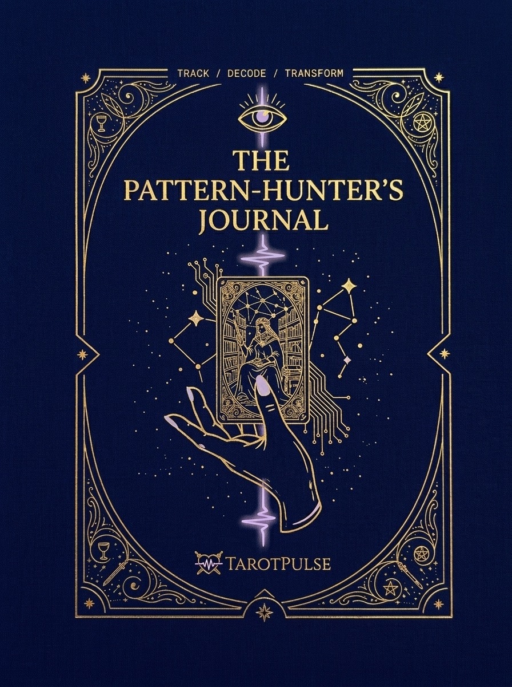
The brand thesis is in the name. Tarot — ancient, gold, serif, the heirloom grimoire. Pulse — the signal, the data-line, the pattern-tracking that makes TarotPulse a category of one instead of one more pretty tarot journal. The look holds both at once: an heirloom grimoire that's secretly a data instrument. Every asset carries the same three tells — the gold pulse-waveform, the filigree that melts into circuit-traces, and constellations drawn as connected data-points.
One mark — the heart, the crossed swords, the gold-to-lavender pulse running through it. The thing that was fighting you on the funnel page is that the old files had a solid background baked in, so the logo carried its own navy (or white) block onto whatever you placed it on. These don't. The transparent versions drop cleanly onto any page color; the pre-baked ones are ready if your background is one of the brand grounds.
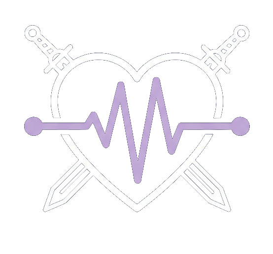
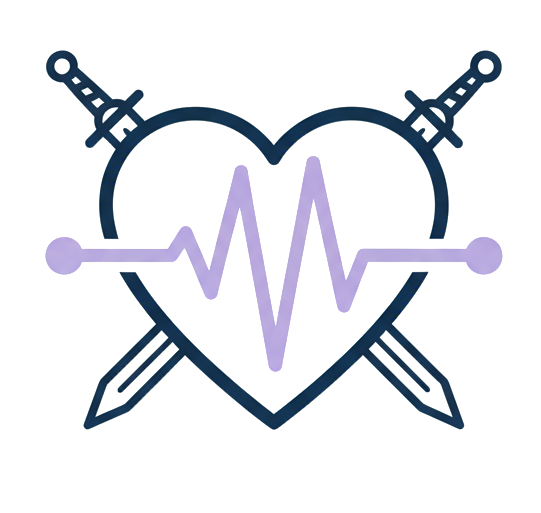
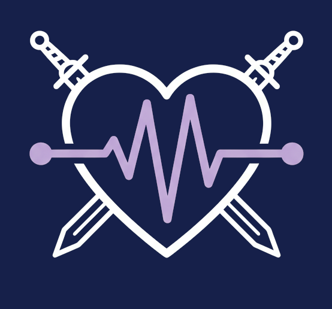
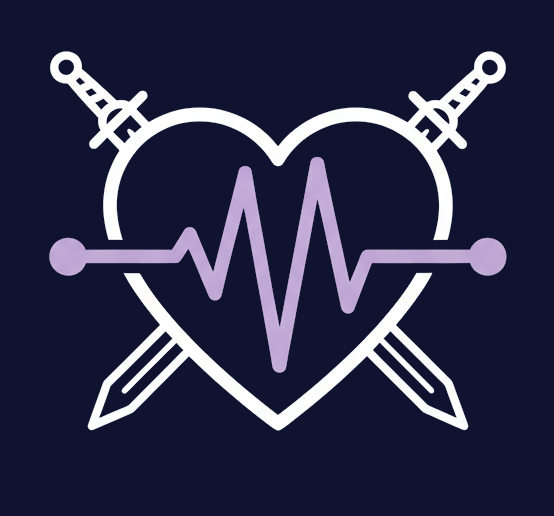
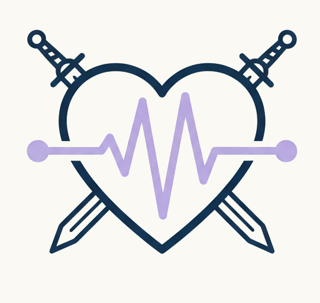
The checkerboard squares mean transparent — that's the see-through background showing, not part of the art. Transparent is the safe default; if you need it baked on a page color that isn't one of the three grounds, send me the hex and I'll cut it.
Icon + "TarotPulse" + tagline, set in the brand fonts (Cinzel + Cormorant Garamond, gold filigree divider). Use this where you've got width — site header, email banner, the freebie cover. Same transparent-vs-baked logic as the icon.
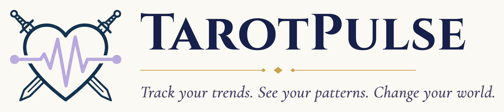
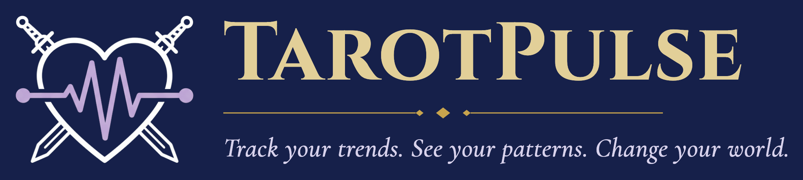
Navy + gold do 90% of the work. Lavender is the one "pulse" signal — used sparingly (a glow on the pulse-line, the third eye). Never a third primary.
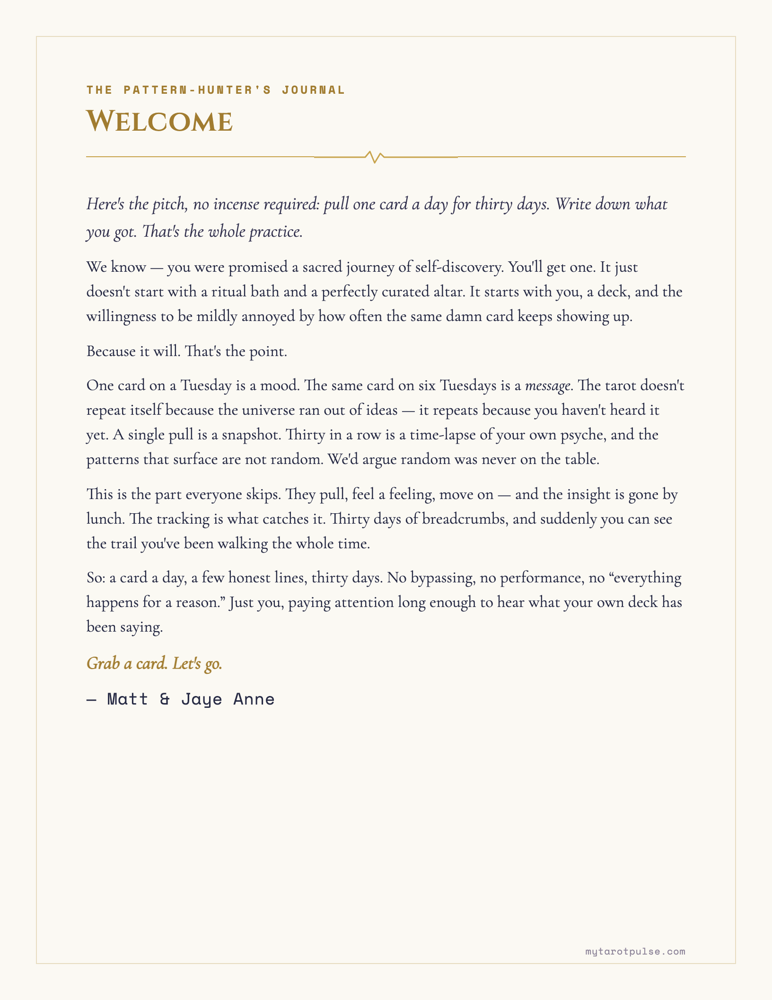
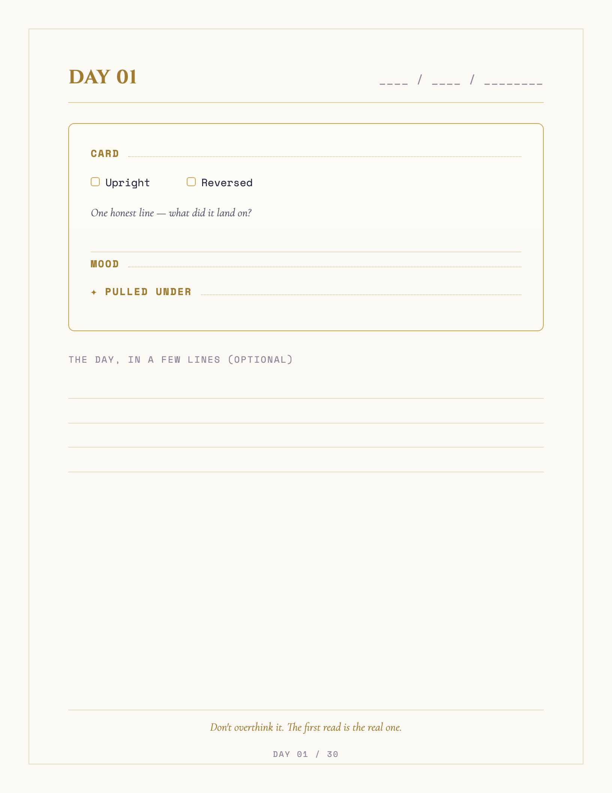
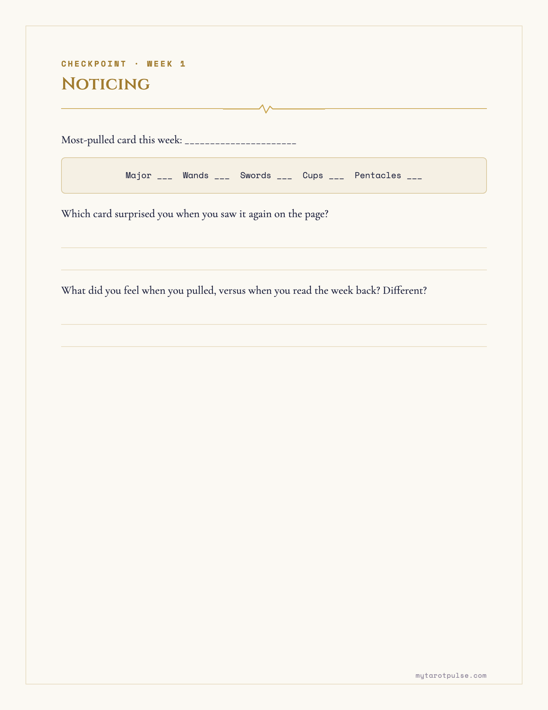
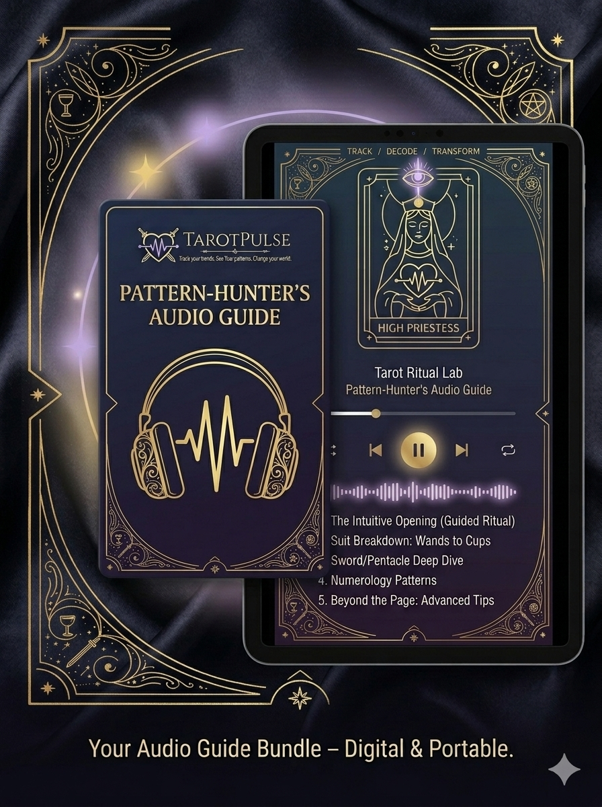
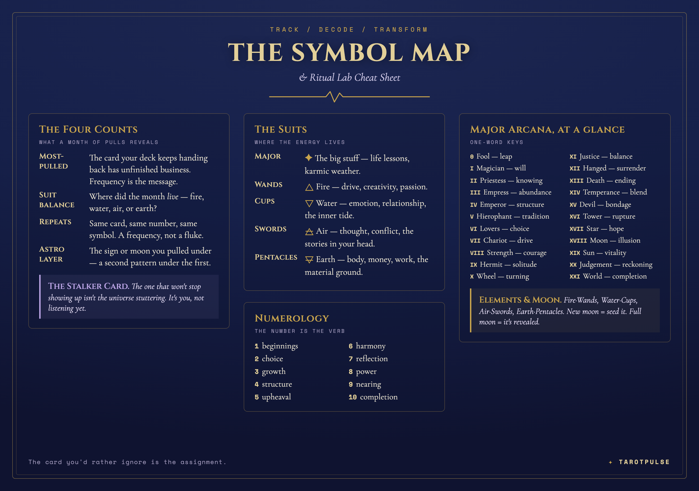
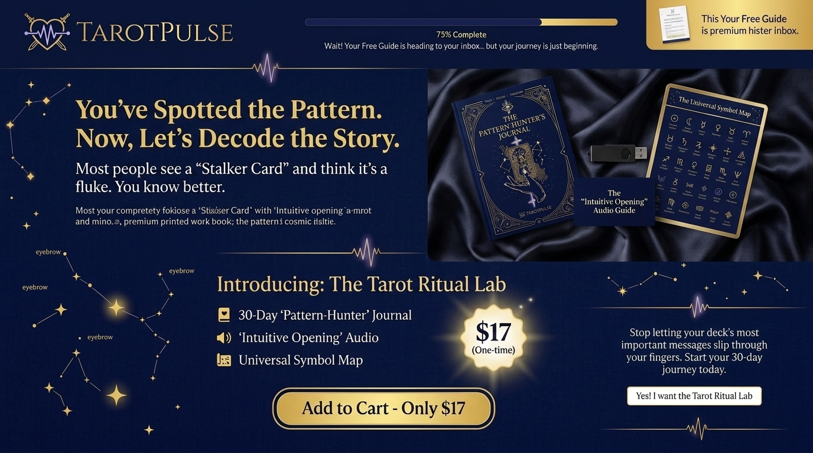
This is the new lead magnet at the top of the funnel — the free download people get from the ad in exchange for their email. Keep it light: a short intro to reading patterns — jumping cards, the cards that keep showing up, why noticing them over time is the whole game. It's the on-ramp to the paid Tarot Ritual Lab. You're writing and building this one; everything below is so it comes out looking like it belongs to the same family — same hand that made the Journal.
#16204A ground, gold #C8A44D for accents & rules, ivory #FBF9F3 if it's a printable. Lavender #B9A3E3 once, max.All the colors, fonts, and motifs in one place are up in The system above; the logo set is in The mark.
Don't want to lay it out by hand? Open Claude Code in a new empty folder and paste the prompt below. It pulls these brand assets down itself, then drafts and builds the freebie workbook with you — and renders it to PDF. Show it your copy (or let it propose a structure first).
You are my brand-aware design+build assistant. We're making the TarotPulse freebie
workbook — the free lead magnet people get from the ad in exchange for their email.
It's a short intro to reading patterns in tarot, and the on-ramp to the paid $17 Tarot
Ritual Lab. It MUST look like it came from the same hand that made the Pattern-Hunter's
Journal. Match the brand; don't invent a new look.
STEP 1 — Pull the brand assets into ./assets (use curl):
Brand kit lives at https://mstine.github.io/tarotpulse-brand-kit/
- brand spec (READ THIS FIRST, it's the rulebook):
https://raw.githubusercontent.com/mstine/tarotpulse-brand-kit/main/downloads/brand-unification-spec.md
- logo, navy-ink transparent (for light pages):
https://mstine.github.io/tarotpulse-brand-kit/assets/logo/tarotpulse-mark-navyink-transparent.png
- logo, light-ink transparent (for dark pages):
https://mstine.github.io/tarotpulse-brand-kit/assets/logo/tarotpulse-mark-lightink-transparent.png
- wordmark lockup (for the cover):
https://mstine.github.io/tarotpulse-brand-kit/assets/logo/tarotpulse-wordmark-on-ivory.png
- QR to the funnel:
https://mstine.github.io/tarotpulse-brand-kit/assets/qr-tarotpulse.png
- Symbol Map (reference / can excerpt):
https://mstine.github.io/tarotpulse-brand-kit/downloads/the-symbol-map.png
- Pattern-Hunter's Journal PDF — the LOOK to match (reference only):
https://mstine.github.io/tarotpulse-brand-kit/downloads/the-pattern-hunters-journal.pdf
STEP 2 — Internalize the brand from the spec. Quick reference:
- Palette: navy #16204A / obsidian #0F1330 ground; antique gold #C8A44D (soft gold
#E2CF98 on dark); lavender #B9A3E3 used ONCE, max; ivory paper #FBF9F3.
- Type (Google Fonts): Cinzel = titles; Cormorant Garamond = body; Space Mono =
labels/eyebrows ("the data layer").
- Motifs: gold pulse/EKG waveform as section dividers; thin gold keyline frame.
Wordmark on the cover; QR on the final CTA page.
STEP 3 — Content. SHORT and light (a lead magnet, not the paid product — aim ~6-10
pages). Ask me for my outline/draft copy. If I don't have one, propose a structure and
draft it in a knowing, warm, not-precious voice, then iterate. A good default arc:
1. Cover (wordmark + title + one-line promise)
2. "Why your cards repeat" — jumping cards and the card that keeps showing up (the
"Stalker Card"), framed as signal not coincidence
3. How to notice patterns over time — the 30-day-pull idea, lightly
4. A 1-page starter tracker they can print/use
5. A few symbol prompts (pull a couple from the Symbol Map)
6. CTA page to the Tarot Ritual Lab (QR + link): "ready to decode the whole story?"
STEP 4 — Build as HTML/CSS, then render to PDF with Playwright (Chromium print-to-PDF,
@page US Letter or A4). Set REAL type — never generate images of text. Optionally an
ivory/printable version and a navy/screen version. One pulse divider between sections;
don't over-decorate.
STEP 5 — Show me the rendered PDF, take my notes, iterate. When I'm happy, export the
final PDF plus a cover thumbnail (PNG).
Start with Step 1, then show me the proposed structure before writing the full draft.
Voice: knowing, a little dry, sacred-but-not-precious. Built for the $17 Tarot Ritual Lab offer.
The mockups show the look; here's how to get that look into GHL without fighting it.
In the Funnel/Website builder, open Settings → Custom CSS (or the page's Custom Code/Head) and paste:
@import url('https://fonts.googleapis.com/css2?family=Cinzel:wght@600;700&family=Cormorant+Garamond:ital,wght@0,400;0,600;1,400&family=Space+Mono:wght@400;700&display=swap');
h1,h2,h3,.headline{font-family:'Cinzel',serif !important;color:#E2CF98;}
body,p,li{font-family:'Cormorant Garamond',serif !important;font-size:20px;}
.eyebrow,.label,button,.cta{font-family:'Space Mono',monospace !important;letter-spacing:1px;}
/* page */
body,.page{background:#16204a;color:#ECE7D8;}
a,button,.cta{background:#C8A44D;color:#1A1530;}
Brand color palette to set in the builder's color picker:
cover.jpg.cover.jpg (product + hero), audio-guide.jpg and symbol-map.png (offer-stack visuals / deliverables).The main site is already in GoHighLevel — so matching it to this system is a restyle, not a rebuild. Here's the homepage in the unified look, plus a step-by-step migration guide. (It also fixes the broken hero video — the live site currently shows a black box where the video should be.)
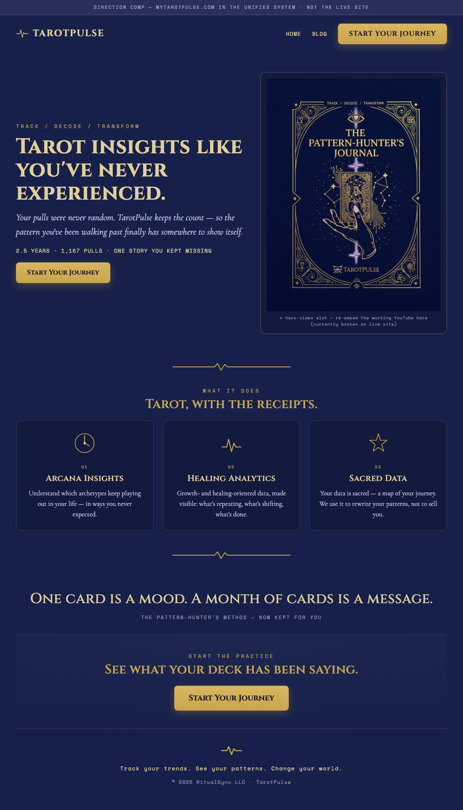
{kind=link}
{kind=link}
{kind=link}
{kind=link}
{kind=link}
{kind=link}
{kind=link}
{kind=link}
{kind=link}
{kind=link}
{kind=link}
{kind=link}
{kind=link}
{kind=link}
{kind=link}